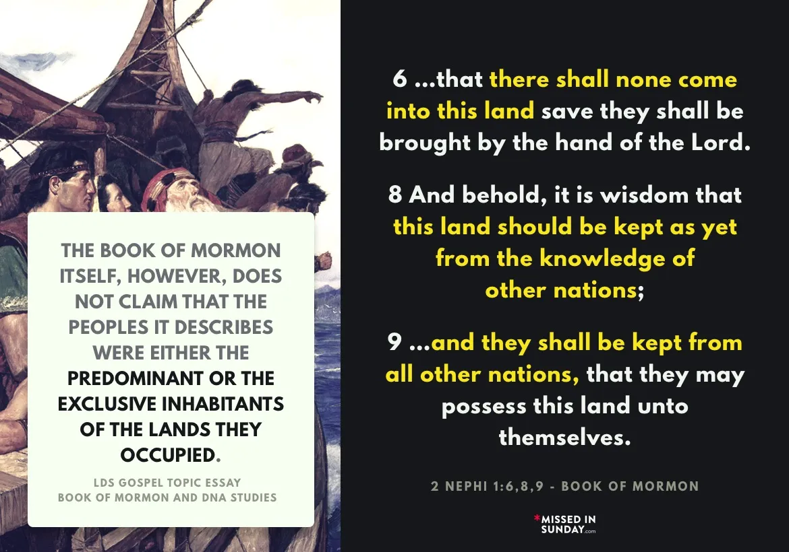

Ever since the Book of Mormon was published, it was the teaching of the church that the Native Americans
(Indians) were the literal descendants of the Lamanites. This was confirmed not just through the Book of
Mormon’s texts, but revelations that Joseph Smith claimed were from God as well.
The Book of Mormon story begins as Lehi leaves Jerusalem and lands in the unpopulated Americas with his
family. Lehi’s descendents then become the two civilizations in this promised land: the Nephites and the
Lamanites.
These two populations were numbered in the millions, and the other two groups in the Book of Mormon, the
Jaredites and the Mulekites, also originate specifically from Israel. What that means is that everyone that
was indigenous to the Americans must be descendents of these Book of Mormon people, which means they would
show DNA that matches the Middle East.
The introduction of the Book of Mormon, added by Bruce R. McConkie in 1981, stated clearly that:
"After thousands of years, all were destroyed except the Lamanites, and they are the principal
ancestors of the American Indians."
Unfortunately for the historicity of the Book of Mormon, advances in DNA studies have been numerous and vast
since 1981, and the results have been overwhelmingly conclusive that Native Americans originated from Asia,
not the Middle East.
The DNA studies have been so conclusive that the church itself made a change to the introduction of the Book
of Mormon in 2006 to the following:
“After thousands of years, all were destroyed except the Lamanites, and they are among the
ancestors of the
American Indians.”
That one word change might seem small, but it is a massive acknowledgement by the church that their claims
regarding the Lamanites are at direct odds not just with studies in migration and archaeology, but with the
wide ranging scientific advancements in DNA. Changing that one word changes the entire premise and meaning
of the Book of Mormon.
Before we get started, I wanted to warn you in advance this might be our longest overview topic, but it’s
because I want to be thorough here so you can understand not just the problem that DNA presents for the Book
of Mormon and Joseph Smith, but why the apologetics that the church uses are simply untenable given both the
DNA evidence and the text from both the Book of Mormon and Joseph Smith’s claimed revelations from God.
The Book of Mormon and the Lamanites
In the church’s Gospel Topics essay on DNA and the Book of Mormon, they begin with a fairly large admission
in the first paragraph:
“Some have contended that the migrations mentioned in the Book of Mormon did not occur because the majority
of DNA identified to date in modern native peoples most closely resembles that of eastern Asian
populations.”
What this first paragraph tells us is that even the church now realizes that the Native Americans descend
from Asian populations. The Native Americans are not Lamanites, which goes against everything we’ve been
taught in the church from Joseph Smith through the current generation of leaders.
The problem is that not only did the Book of Mormon make clear that the Americas were the promised land for
Lehi and his descendents, but there is no mention anywhere of another population that could have originated
from an Asian population.
Spencer W. Kimball said the following in a 1967 BYU devotional called “The Lamanite: Their Burden, Our
Burden:”
“They are not orientals. They are from the Near East… it is not impossible that there could have seeped
across the Bering Strait a little oriental blood as claimed by some people, but basically these Lamanites,
including the Indian ARE the descendants of Lehi, who left Jerusalem 600 years BC.” (BYU devotional, The
Lamanite: Their Burden, Our Burden, February 6, 1967)
What is important to note is that scientists have known since the mid-1900s that the Americas were populated
by people who
migrated from Asia, which was later confirmed by DNA evidence. This is why Kimball stated in 1967
that Native Americans are not 'Orientals'—because at the time, it was easier to dispute the growing theory
of the Bering Land Bridge. However, the Church’s essay goes on to concede that science clearly shows Native
Americans carry Asian DNA.
“The evidence assembled to date suggests that the majority of Native Americans carry largely Asian DNA.
Scientists theorize that in an era that predated Book of Mormon accounts, a relatively small group of people
migrated from northeast Asia to the Americas by way of a land bridge that connected Siberia to Alaska.”
First I want to point out the wording that the church uses early in their essay to cast doubt on the
findings. They say that the evidence “suggests” Asian DNA and that scientists “theorize” that the first
inhabitants of the Americans came from the Bering Land Bridge. The DNA is not suggesting that Native
Americans originated from Asia – it is flat out telling us that. The church is using these words to slowly
build doubt throughout the essay in what science can tell us.
This is a problem because the Book of Mormon is told to be a literal, historical account of how the Americas
were populated, and not only is the DNA very clear that the Native Americans originated from Asia, but that
they arrived tens of thousands of years before the Book of Mormon is claimed to take place.
As we discussed in the previous sections on biblical scholarship, this presents problems not just for the
Book of Mormon, but for any Bible stories that are pulled into the Book of Mormon as literal history. Three
examples of what DNA has helped us learn about the earliest inhabitants of the Americas:
The DNA of an Ancient Alaskan infant called Xach'itee'aanenh t'eede gaay (Sunrise child-girl) tells us that
the first Americans arrived at least 20,000 years ago, which is 14,000 years before the biblical fall of
Adam and Eve and 17,000 years before the Book of Mormon narrative. (UAF News and Information, Jan 3, 2018)
A teenage girl known as Naia whose skeleton, along with 8 others, was found preserved underwater in a cave
on the Yucatan peninsula. Collagen from her bones was securely dated to ~13000 years ago. Her DNA has been
sequenced and it is fully Native American, directly ancestral to modern Native Americans and descended from
Sunrise child-girl’s people. (Science,16 May, 2014). Naia’s dating and genetic makeup is also consistent
with the recent discovery in Montana of the remains of a 12,700 year old boy known as the Anzick Child
(Science, Feb. 12, 2014.)
In May of 2020 DNA from the remains of Siberian man who died about 14,000 years ago revealed him to be the
earliest known person in the world to have the specific mix of genes seen in people with Native American
ancestry (Paleolithic to Bronze Age Siberians Reveal Connections with First Americans and across Eurasia,
Cell, May 20, 2020).
This really should be the end of the discussion, as the entire premise of the Book of Mormon is that it
contains a history of the Lamanites, but now we know that the people that God labeled the Lamanites through
revelations to Joseph Smith are not Lamanites, but originated in Asia long before the Book of Mormon is
supposed to have taken place.

Excerpt from the LDS Gospel Topic Essay, Book of Mormon and DNA Studies. 2 Nephi 1:6,8,9
To be clear, the Book of Mormon tells us that the Americas were not populated and had been preserved for
these chosen people. God tells Nephi the following:
"it is wisdom that this land should be kept as yet from the knowledge of other nations; for behold, many
nations would overrun the land, that there would be no place for an inheritance...and they shall be
kept
from all other nations, that they may possess this land unto themselves" (2 Nephi 1:8-9)
God told the Jaredites that he would send them to “that quarter where there never had man been,” to a land
of promise “reserved for a righteous people.” (Ether 2:5-7). As a small aside, here Ether is actually
referencing the apocryphal book of II Esdras, written about 2000 years after the Jaredite story, which used
this phrase to describe the destination of the Ten Tribes. (2 Esdras 13:41) The book of Esdras was in the
1769 version of the King James Bible, which also happens to be the version that Joseph Smith owned when
producing the Book of Mormon.
Helaman makes it even more clear, telling us that the original population was responsible for populating the
entire Americas:
“And it came to pass that they did multiply and spread, and did go forth from the land southward to the land
northward, and did spread insomuch that they began to cover the face of the whole earth, from the sea south
to the sea north, from the sea west to the sea east” (Helaman 3:8)
It becomes quite inescapable when reading these passages that they are intentionally not leaving any room
for additional, larger populations that would be responsible for effectively negating the DNA of Lehi and
his descendents.
Let’s go a bit further in looking at what the Book of Mormon does tell us. From 1 Nephi:
“And it came to pass that we did find upon the land of promise, as we journeyed in the wilderness, that
there were beasts in the forests of every kind, both the cow and the ox, and the ass and the horse, and the
goat and the wild goat, and all manner of wild animals, which were for the use of men.” (1 Nephi 18:25)
Again, if there were established civilizations in the Americas, they would mention them. Ignoring the
anachronisms in the animals that the Book of Mormon lists here for now, if there were buildings, structures,
or roads, the Book of Mormon would mention them. The only reason to argue otherwise is out of necessity to
find a way to make the Book of Mormon’s problems go away.
Looking beyond the Book of Mormon, here is Joseph Smith’s description of how the Americas were populated in
the Wentworth Letter:
“In this important and interesting book the history of ancient America is unfolded, from its first
settlement by a colony that came from the Tower of Babel at the confusion of languages to the
beginning of
the fifth century of the Christian era. We are informed by these records that America in ancient
times has
been inhabited by two distinct races of people. The first were called Jaredites and came
directly from the
Tower of Babel. The second race came directly from the city of Jerusalem about six hundred years before
Christ. They were principally Israelites of the descendants of Joseph. The Jaredites were destroyed about
the time that the Israelites came from Jerusalem, who succeeded them in the inheritance of the country. The
principal nation of the second race fell in battle towards the close of the fourth century. The
remnant are
the Indians that now inhabit this country.” (The Wentworth Letter, Ensign, July, 2002)
That is incredibly straightforward and matches the Book of Mormon exactly as you would expect it to. I am
just not sure how else to put it – the Book of Mormon and the prophets who claimed to receive revelation
from God all tell us that the Native Americans were the descendents of the Lamanites. Here are just a few
examples that Joseph Smith recorded as revelation from God:
D&C 54:8 And thus you shall take your journey into the regions westward, unto the land of Missouri, unto the
borders of the Lamanites.
D&C 19:27 Which is my word to the Gentile, that soon it may go to the Jew, of whom the Lamanites are a
remnant, that they may believe the gospel, and look not for a Messiah to come who has already come.
D&C 3:18 And this testimony shall come to the knowledge of the Lamanites, and the Lemuelites, and the
Ishmaelites, who dwindle in unbelief because of the iniquity of their fathers
D&C 28:8 And now, behold, I say unto you that you shall go unto the Lamanites and preach my gospel unto them
When you read these revelations (and there are others beyond these four examples that we will cover below),
it becomes clear that Joseph Smith was told by God that the Lamanites were the Native Americans in Missouri.
This is inescapable, and we now know that those Native Americans have absolutely nothing to do with Book of
Mormon lineage. It simply does not get much clearer than this—the revelations Joseph Smith claimed were from
God are wrong.
The Church has released videos telling Native Americans and Polynesians that they are Lamanites, such as the
video People of Destiny released in 1988, which is
stealing their actual, rich history from them. The Church
even told them that their skin would turn 'white and delightsome' if they joined the Church and remained
faithful. We will cover the issue of racism later in these overviews, but this further shows that the
Church's prophets believed without hesitation that God revealed to them who the descendants of the Lamanites
are.
But don’t take my word for it. From Apostle Mark E. Petersen:
"If there had been large numbers of other peoples here when the Jaredites came, or when Lehi arrived,
certainly the Book of Mormon would have said so. The land was reserved for the Lord’s purposes and for His
peoples, and the Book of Mormon provides their histories." (Children of Promise, Bookcraft, 1981).
This is a claim that both the Book of Mormon and all of the Church’s prophets, seers, and revelators have
made, and we are now able to test this theory using archaeology, migration studies, and DNA. It is
undeniable that the Book of Mormon’s claims are simply not true. Not only are Native Americans completely
unrelated to the story of the Lamanites, but they arrived tens of thousands of years before the events
described in the Book of Mormon.
As we discussed in the biblical scholarship sections, the Book of Mormon’s claims of being a historical
record not only fall apart when we consider the stories of the Tower of Babel or the global flood, but the
book’s own claims simply cannot stand up to the evidence we now have.
Apologetic Response to the DNA Problem
Because I believe this is such a straightforward issue that completely undermines the entire premise of the
Book of Mormon, I want to spend more time addressing the apologetic responses, as they simply do not hold up
to scrutiny. While many may argue that DNA is too complex to understand and therefore shouldn’t be a
concern, I want to show you that we can understand it, and we can also see clearly why it proves the Book of
Mormon is not a true historical record.
I will focus primarily on the Church’s essay on DNA, as it was approved by the First Presidency, but I’ll
also briefly address another commonly cited response at the end.
In recent decades, the Church has effectively rewritten the narrative of the Book of Mormon, telling members
that science is tentative and that other populations existed when Lehi arrived. Neither of these claims
stands up to the evidence, and that’s what we will examine here.
From the church’s essay:
“Basic principles of population genetics suggest the need for a more careful approach to the data. The
conclusions of genetics, like those of any science, are tentative, and much work remains to be done to fully
understand the origins of the native populations of the Americas. Nothing is known about the DNA of Book of
Mormon peoples”
First, as I mentioned above the essay continues to use words that are designed to put doubt into the reader
with regards to what science can tell us. In this section they tell the member that they need a “more
careful approach” that aligns with the church’s views, and that the science is “tentative” about what it can
and cannot tell us. This goes against what any non-LDS geneticist will tell you. The idea that DNA is a
settled science is of course never going to be 100% true, but as geneticist Jamie Hanis Handy, a member of
the church, said:
“If you're looking at DNA and Book of Mormon and the ethnic long term history of indigenous populations, the
picture is just like watching a photo load, right? It starts blurry, it starts to get clearer, it starts to
get clearer, and we are just getting clearer and it [the church’s claim about Lamanites] is still not
jiving.” (Mormon
Stories, Three Geneticists Respond to DNA Essay)
This is the problem for the apologetic claims seeking to push aside DNA evidence – the technology is getting
better every day, and as the picture becomes more clear there is not only no major changes in the current
views, but the new evidence is further pushing out any possibility of the Book of Mormon as a historical
text.
Other People Living Alongside the Book of Mormon Populations
The most common apologetic as scientific advances have made clear that the Native Americans and Polynesians
have no connection to the Book of Mormon narrative is to state that there were other populations that lived
alongside the Book of Mormon populations. From their essay:
“The Book of Mormon provides little direct information about cultural contact between the peoples it
describes and others who may have lived nearby. Consequently, most early Latter-day Saints assumed that Near
Easterners or West Asians like Jared, Lehi, Mulek, and their companions were the first or the largest or
even the only groups to settle the Americas. Building upon this assumption, critics insist that the Book of
Mormon does not allow for the presence of other large populations in the Americas and that, therefore, Near
Eastern DNA should be easily identifiable among modern native groups.”
The reason the Book of Mormon provides 'little direct information about cultural contact between the peoples
it describes and others who may have lived nearby' is because there is none. And why would anyone expect
such information when it was meant to be clear that the Book of Mormon’s Lamanites were the ancestors of the
Native Americans?
This podcast is important because the speakers understand and explain what the Church states in its essay,
which implies that DNA is too confusing and difficult for members to grasp, so it’s not something to worry
about. The episode is about 90 minutes long, and if you listen at 1.5x speed, you’ll spend just an hour
gaining valuable insight into this topic
From the church’s essay:
“A brief review of the basic principles of genetics will help explain how scientists use DNA to study
ancient populations. It will also highlight the difficulty of drawing conclusions about the Book of Mormon
from the study of genetics.”
Right away the church is telling you that DNA is too complicated to be able to draw conclusions about the
implications for the Book of Mormon. Much of their essay about DNA itself is well written, but is framed as
an overview for members to give reasons why there’s still an outside chance the Book of Mormon can still be
historical.
Our annotated essay on DNA and the Book of Mormon includes the following example, which is exaggerated and
silly on purpose:
“Let’s imagine that the senior director of NASA once claimed that the moon is made of green cheese, but when
astronauts landed they found none. The obvious conclusion would be that the moon is not, nor ever was made
of green cheese. Now suppose NASA hired some lunar apologists to write an essay to explain away the
embarrassing discrepancy.
This essay would consist of a series of convoluted explanations and arguments about how, although today we
know the moon is made of minerals, we should nevertheless give credence to the director’s authoritative
claim that the moon’s chemistry was once predominated by dairy products. They would then proceed to give you
several hypotheses about how the cheese might have transmuted into something else or otherwise disappeared.
They would use some sciency talk to help you feel comfortable that people smarter than you are on top of the
cheese problem and that, if you just change your expectations about what the NASA director actually meant by
“green” and “cheese” you will be able to satisfy yourself that the complete absence of cheese is somehow
just what the really smart people should have been expecting all along, and that you should let your
personal feelings inform your belief about the long ago presence of moon cheese. You might even be shamed
for naively expecting to find cheese on the moon today, and criticized for lacking the faith to believe it
really was there when the director made the claim.”
Again, this example is meant to be over the top, but it is exactly what the church does with their essays,
because they are aware enough that the evidence is so overwhelmingly against them that they changed the
introduction to the Book of Mormon.
From the essay:
“At the present time, scientific consensus holds that the vast majority of Native Americans belong to
sub-branches of the Y-chromosome haplogroups C and Q14 and the mitochondrial DNA haplogroups A, B, C, D, and
X, all of which are predominantly East Asian.15 [This endnote merely confirms that Native Americans arrived
from Siberia and populated the New World long before Book of Mormon times] But the picture is not entirely
clear. Continuing studies provide new insights, and some challenge previous conclusions. For example, a 2013
study states that as much as one-third of Native American DNA originated anciently in Europe or West Asia
and was likely introduced into the gene pool before the earliest migration to the Americas. This study
paints a more complex picture than is suggested by the prevailing opinion that all Native American DNA is
essentially East Asian."
This is an easy point to address, and the Church provides the answer in the paragraph itself. When they say
'before the earliest migration to the Americas,' they are acknowledging that these people arrived in America
long before Book of Mormon times, somehow survived the global flood, and were already a large, widespread
population when Lehi arrived.
Additionally, full disclosure in this essay would reveal that this same DNA is shared with ancient Siberians
and that much of this DNA is shared by all humans, regardless of where they live. Once again, this example
is used to reassure LDS members that there is Western Eurasian DNA in the Americas, but it actually
undermines the Book of Mormon narrative, as the DNA predates both the Jaredites and the Nephites.
Back to the church’s essay:
“While Near Eastern DNA markers do exist in the DNA of modern native populations, it is difficult to
determine whether they are the result of migrations that predated Columbus, such as those described in the
Book of Mormon, or whether they stem from genetic mixing that occurred after the European conquest.”
According to geneticist Simon Southerton, who discovered this information while serving as a believing
bishop in the church, Native American DNA is 99.6% ancient Asian. The remaining 0.4% has been determined to
be Spanish and African post-colonization admixture. (Mormon
Stories, Three Geneticists Respond to DNA Essay)
More from the church’s essay:
“This is due in part to the fact that the “molecular clock” used by scientists to date the appearance of
genetic markers is not always accurate enough to pinpoint the timing of migrations that occurred as recently
as a few hundred or even a few thousand years ago.”
Again, this is a very straightforward declaration that simply does not hold up. From Eric Fairfield , who
has a Ph.D. in moleular biology:
“There are thousands of studies showing exactly how accurate it [the molecular clock] is and where it goes
slightly faster and slightly slower. You can calibrate the mitochondrial clock for probably all animals on
the planet, so it doesn't say down to the second. But it has it within a couple hundred years all the time
and sometimes much closer than that.” (Mormon
Stories, Three Geneticists Respond to DNA Essay)
The church is trying to use the fact that there is not 100% settled information to cast doubt on everything
we do know. This is similar to the approach they take with Joseph Smith’s incorrect translation of the Book
of Abraham papyri, when they cite differences in non-LDS scholars while not acknowledging that every single
non-LDS scholar says that Joseph Smith unquestionably got the translations wrong.
Back to the essay:
“Scientists do not rule out the possibility of additional, small-scale migrations to the Americas.”
As mentioned above, the Church is citing an article about the remains of the 24,000-year-old Mal’ta boy in
Siberia, whose DNA shows that not only was he an ancestor of Native Americans, but that his ancestors also
had roots in the Near East. This evidence actually works against the Book of Mormon, as it dates the Western
Eurasian DNA of ancient Americans to 20,000 years before Book of Mormon times, making it impossible for the
DNA to have come from the Jaredites or Lehites. It also implies that the global flood never occurred, as
that DNA persisted in populations through to modern times.
This is the issue with the Church’s essay—every time they attempt to answer a problem, their own citations,
when closely examined, further disprove the Book of Mormon’s claims of being historical.
This article is also frequently cited by the Church’s apologists as proof of the Book of Mormon because it
was covered by National
Geographic. The problem is that when members or apologists cite this article, they
overlook the fact that it actually disproves the Book of Mormon narrative, as it predates not only the Book
of Mormon but even the Adam and Eve story.
Back to the essay:
“For example, a 2010 genetic analysis of a well-preserved 4,000-year-old Paleo-Eskimo in Greenland led
scientists to hypothesize that a group of people besides those from East Asia had migrated to the Americas.”
This is actually strong evidence of the power of population genetics. This Paleo-Eskimo individual dates to
Jaredite times, but their DNA leaves no mystery about their origin. In contrast, it would be amazing if we
had a Mesoamerican skeleton from Jaredite times with genetic material of Middle Eastern origin, but that
hasn’t happened. Instead, it appears the opposite is true, which raises the question of why the church
included this in their essay—until you realize that they may be hoping members do not look closely at the
citations used to support these points.
Back to the essay:
“Commenting on this study, population geneticist Marcus Feldman of Stanford University said: “Models that
suggest a single one-time migration are generally regarded as idealized systems. … There may have been small
amounts of migrations going on for millennia.”
Marcus Feldman was specifically discussing Eskimo/Inuit migrations, which are clearly visible in the DNA of
their remains. This directly contrasts with the essay's claims about Book of Mormon peoples from the same
time period, whose unique genetic markers, it suggests, somehow disappeared. In other words, the church
wants readers to believe that scientists can trace various migrations through DNA, yet also to believe that
the DNA of Book of Mormon populations has simply vanished.
The Church’s Essay and the Founder Effect
“One reason it is difficult to use DNA evidence to draw definite conclusions about Book of Mormon peoples is
that nothing is known about the DNA that Lehi, Sariah, Ishmael, and others brought to the Americas. Even if
geneticists had a database of the DNA that now exists among all modern American Indian groups, it would be
impossible to know exactly what to search for. It is possible that each member of the emigrating parties
described in the Book of Mormon had DNA typical of the Near East, but it is likewise possible that some of
them carried DNA more typical of other regions. In this case, their descendants might inherit a genetic
profile that would be unexpected given their family’s place of origin. This phenomenon is called the founder
effect.”
This issue is straightforward if you’re not trying to fit a square peg into a round hole. It is simply
not
true that 'nothing is known about the DNA that Lehi, Sariah, Ishmael, and others brought to
the
Americas.'
The Book of Mormon clearly states that Lehi’s family were Israelites from Jerusalem. Is this essay
suggesting that the Lehites might have been descendants of Siberians who temporarily relocated to Jerusalem
before building a ship and coming to America? An article on LDS.org titled Who and Where are the
Lamanites?
explains:
“In this composite group is the blood of Israel, for we know that Lehi was of the tribe of Manasseh
(see Alma 10:3), that Ishmael was of Ephraim (see JD 3:184), and that Mulek was of Judah, being a descendant
of King David through Zedekiah.” (Who and Where Were the Lamanites?, Ensign,1975)
Please don’t get sidetracked by the red herring that we lack DNA from individuals who traveled with Nephi.
The goal here is not to identify individuals through DNA profiling but to examine population genetics.
According to the Book of Mormon’s account of its origins, one of its founders, Mulek, was the son of King
Zedekiah of Jerusalem—a lineage that is well-documented. What more could you ask for? Joseph Smith stated
that the Lamanites 'were principally Israelites, descendants of Joseph' (The Wentworth Letter, Ensign, July
2002). Additionally, we know that one reason Lehi needed the Brass Plates was that they contained his
genealogy, showing he was a descendant of Joseph. Thus, there is no reason for the church to suggest we’re
seeking some unusual or foreign DNA.
Certainly, we don’t have remains from Lehi’s family to compare, but this is a diversion. We know where
Lehi’s family came from, which is why companies like 23andMe can use DNA to trace ancestry origins—not
because they have specific family remains, but thanks to advances in population genetics that track
migrations as far back as Neanderthals.
I’m not trying to sound harsh, but I do want to push back strongly here because the authors of this essay
seem intentionally misleading in suggesting that nothing is known. The scriptures give us ample information
to understand what genetic markers might appear in Native Americans if they are descendants of the
Lamanites.
I know this is a long overview, but this next section is important to highlight how unhelpful these
apologetic arguments are:
“Consider the case of Dr. Ugo A. Perego [likely the author of this essay], a Latter-day Saint population
geneticist. His genealogy confirms that he is a multigeneration Italian, but the DNA of his paternal genetic
lineage is from a branch of the Asian/Native American haplogroup C. This likely means that, somewhere along
the line, a migratory event from Asia to Europe led to the introduction of DNA atypical of Perego’s place of
origin.21 If Perego and his family were to colonize an isolated landmass, future geneticists
conducting a
study of his descendants’ Y chromosomes might conclude that the original settlers of that landmass were from
Asia rather than Italy.”
This example is actually counterproductive for the church, as they would also see the Italian component in
his DNA. It’s a humorous illustration because it is the exact opposite of what this essay claims about DNA
and Book of Mormon peoples. Interestingly, Dr. Perego does have Asian markers in his paternal line, even
though his ancestors arrived in Italy many generations ago.
Originally, Dr. Perego was under the impression that he had purely Italian ancestry until genetic testing
set him straight. He didn’t need a tissue sample from a distant ancestor to answer this for him. Why does he
trust the science in his own case, adjusting his beliefs about his ancestry accordingly, but not with the
Book of Mormon? His previous belief was shown to be false, and he now accepts the scientific evidence—just
as we do with anything that doesn’t conflict with a deeply held belief.
Back to the essay to sum up the example from Uro Perego:
“This hypothetical story shows that conclusions about the genetics of a population must be informed by a
clear understanding of the DNA of the population’s founders. In the case of the Book of Mormon, clear
information of that kind is unavailable.”
The first sentence is absolutely correct, and it underscores the fact that DNA can clarify the question of
who founded a population despite what we have always believed or wish to be the case. As we said above, this
problem is simply one that the church cannot move away from in a manner that is reconcilable with their own
scriptures because they give such specific information as to where Lehi and all Book of Mormon groups
originated from.
The book’s title page, penned by Moroni, tells us that it is “written to the Lamanites, who are a remnant of
the house of Israel.” This title page was said by Joseph Smith to be a direct translation off the gold
plates, which means that this is not Joseph Smith’s thoughts, but the word of God.
If the Book of Mormon was written for the Lamanites, then clearly they must still exist. And not only does
the Book of Mormon give clues that they are the Native Americans because of their dark skin, but God
confirms it in revelations to Joseph Smith.
We highlighted some of these above, but here are a few more just to drive this point home:
D&C 49:24 But before the great day of the Lord shall come, Jacob shall flourish in the wilderness, and the
Lamanites shall blossom as the rose.
D&C 28:14 And thou shalt assist to settle all these things, according to the covenants of the church, before
thou shalt take thy journey among the Lamanites.
D&C 30:6 ...for I have given unto him power to build up my church among the Lamanites.
D&C 28:9 ...and no man knoweth where the city of Zion shall be built, but it shall be given hereafter.
Behold, I say unto you that it shall be on the borders by the Lamanites.
We are told by God that Joseph Smith needed to preach to the Lamanites—so where did he go? He went to
Missouri, where Native American settlements existed. Writings of church leaders at the time clearly
identified these people as Lamanites, based on the dark skin the Book of Mormon attributes to them. We will
address the topic of dark skin further on, but this is how prophets of God have historically identified
Lamanites throughout the church’s history.
Prophet Gordon B. Hinckley confirmed the identity of Native Americans as Lamanites when he dedicated the
Ciudad Juarez Temple, saying, “May the sons and daughters of Father Lehi grow in strength and fulfillment of
the ancient promises made concerning them” (LDS Church News, March 13, 1999). Elder James E. Faust
similarly
confirmed this during the dedication of the Tuxtla Gutierrez, Mexico temple: “We invoke thy blessings upon
this nation of Mexico where so many of the sons and daughters of Father Lehi dwell” (LDS Church
News, March
18, 2000). President Thomas S. Monson referred to attendees at the Villahermosa, Mexico temple as “children
of Lehi” (LDS Church News, May 27, 2000), and President Hinckley remarked that members attending
the
Guayaquil, Ecuador temple “have the blood of Lehi in their veins” (LDS Church News, August 7,
1999).
President Spencer W. Kimball initiated the Indian Placement Program with the goal of helping the Lamanites
remove their curse and become “white and delightsome.” He stated, “The day of the Lamanites is nigh. For
years they have been growing delightsome, and they are now becoming white and delightsome,” and, “The
children in the home placement program in Utah are often lighter than their brothers and sisters in the
hogans on the reservation” (Improvement Era, December 1960, pp. 922–923).
This identification becomes even more complicated when considering the inhabitants of the Pacific Islands,
who have also been identified by prophets and apostles as descendants of Lehi. President David O. McKay
confirmed this connection in his dedicatory prayer for the New Zealand temple: “We express gratitude that to
these fertile islands Thou didst guide descendants of Father Lehi.”
This opens an entirely different set of DNA-related issues that challenge the arguments in this essay.
Official church manuals have consistently taught that the native peoples of the Americas and the Pacific
Islands are Lamanites: “Great numbers of Lamanites in North and South America and the South Pacific are now
receiving the blessings of the gospel” (Gospel Principles, 1997, p. 268). Attempting to place both
Polynesians and Native Americans in the same lineage severely undermines any efforts in the essay to explain
the DNA issues specific to Native Americans.
Genetic evidence from Pacific Islanders shows they originated from a different part of Asia than Native
Americans (Nature, October 3, 2016). Additionally, islands identified by church leaders as settled
by Hagoth
and his descendants were, in fact, populated long after Book of Mormon times. Humans first arrived in New
Zealand in the 14th century AD—800 years after Moroni buried the gold plates. This is not simply a mistake
by church manual writers; it has been established doctrine, beginning with Brigham Young, who stated, “Those
islanders and the natives of this country (United States) are of the House of Israel, of the seed of
Abraham” (Journal of Religious History, 8:90–104). Many other leaders have reiterated this idea.
I understand that this overview is lengthy, but it is crucial to outline the challenges church apologetics
face regarding DNA and the Lamanites. I want to be clear: the DNA evidence presents serious challenges to
the authenticity of the Book of Mormon as an ancient text and, by extension, to the claim of Joseph Smith as
a prophet of God.
The premise of the Book of Mormon is to bring the Lamanites to God, yet the church no longer seems to have a
clear idea of who the Lamanites are, now that DNA evidence contradicts previous teachings.
Population Bottleneck
The Church’s Essay on Population Bottleneck:
“Population bottleneck is the loss of genetic variation that occurs when a natural disaster, epidemic
disease, massive war, or other calamity results in the death of a substantial part of a population. These
events may severely reduce or totally eliminate certain genetic profiles. In such cases, a population may
regain genetic diversity over time through mutation, but much of the diversity that previously existed is
irretrievably lost.
Illustration of a genetic bottleneck: a catastrophic event reduces population diversity over
time.
Due to a dramatic reduction in population, some genetic profiles (represented here by the yellow, orange,
green, and purple circles), are lost. Subsequent generations inherit only the DNA of the survivors.”
This is an interesting argument to make because the arrival of the first Americans from Asia is a textbook
example of a genetic bottleneck. It is commonly accepted that a small group of people either passed through
a briefly open corridor between ice sheets or followed a coastal route by boat, and then spread rapidly
throughout the Americas over a period of about 2,000 years, where they continued to flourish until the
arrival of European conquerors.
If a bottleneck really is such a dire genetic problem their DNA should be a complete mystery because of
mutations in the intervening millennia, yet we are still able to easily trace their genetic lineage directly
back to Siberia and to that Mal’ta skeleton from 24,000 years ago, despite the founder effect, despite the
bottleneck, and despite a timescale that is vastly deeper than that of the Book of Mormon.
If the consequences of bottleneck and founder effect are so severe, the greatest mystery in genetic science
today would be where any of the people of the Americas come from, but it’s not a mystery. Yes, mutations can
cause the loss of individual genetic base pairs, specifically those that don’t contribute to the survival of
the organism, but the vast majority of the genetic material is passed on from generation to generation
Back to the essay:
“In addition to the catastrophic war at the end of the Book of Mormon, the European conquest of the Americas
in the 15th and 16th centuries touched off just such a cataclysmic chain of events. As a result of war and
the spread of disease, many Native American groups experienced devastating population losses.22
One molecular anthropologist observed that the conquest “squeezed the entire Amerindian population through a
genetic bottleneck.” He concluded, “This population reduction has forever altered the genetics of the
surviving groups, thus complicating any attempts at reconstructing the pre-Columbian genetic structure of
most New World groups.”
First, we must remember that the 'catastrophic war at the end of the Book of Mormon' left the Lamanites
alive and well, which is why we were taught that Native Americans are their direct descendants. This was not
a catastrophic war that left only one or two people alive, but a conflict after which an entire race
continued to populate the Americas following the Book of Mormon's events.
Second, the author quoted here is LDS geneticist Ugo Perego, likely the uncredited author of this essay and
almost certainly quoting himself.
Yes, the genetic pressures on ancient Americans did alter their genetic structure, but in measurable and
understandable ways. Are we to believe that European diseases and warfare specifically and exclusively
“squeezed out” only the Nephite, Lamanite, Jaredite, and Mulekite elements, while leaving ample evidence of
only the “other” lineages from thousands of years prior? That’s quite an impressive leap of logic.
But even this assumption falls short. DNA has been sequenced from many ancient archaeological remains of
individuals predating these wars, including the 8,500-year-old Kennewick Man from the American Northwest, as
well as individuals from 12,000 to 13,000 years ago in Montana and the Yucatan. Additionally, DNA has been
sequenced from numerous individuals from the timeframe and locations assumed in the Book of Mormon. These
findings present a consistent picture of a continuous presence of Siberian-descended ancient peoples
throughout the Americas, with no sign of Middle Eastern intrusion. If that’s not enough, a $99 DNA test from
23andMe can still measure the Neanderthal DNA in Native Americans
dating back over 40,000 years.
Genetic Drift
The Church’s Essay on Genetic Drift:
“Genetic drift is the gradual loss of genetic markers in small populations due to random events. A simple
illustration is often used to teach this concept:
Fill a jar with 20 marbles—10 red, 10 blue. The jar represents a population, and the marbles represent
people with different genetic profiles. Draw a marble at random from this population, record its color, and
place it back in the jar. Each draw represents the birth of a child. Draw 20 times to simulate a new
generation within the population. The second generation could have an equal number of each color, but more
likely it will have an uneven number of the two colors.
Before you draw a third generation, adjust the proportion of each color in the jar to reflect the new mix of
genetic profiles in the gene pool. As you continue drawing, the now-uneven mix will lead to ever more
frequent draws of the dominant color. Over several generations, this “drift” toward one color will almost
certainly result in the disappearance of the other color.”
After being just told in the population bottleneck section above that the Book of Mormon people were wiped
out by war, we are now told that it could also be genetic drift that removes their DNA from existence.
The problem here is that this is a deceptively oversimplified illustration. It is fairly easy to imagine how
ten marbles can be removed from a jar of 20 by random extraction. In fact, I tried a variation of this
experiment, and here’s what I learned: if you assume that each marble pulled from the jar counts as one
generation, it takes about 50 generations to eliminate the red marbles. That seems to support their case,
right? But what if you double the number of marbles? If you use 20 of each color, it turns out that it
doesn’t take twice as many generations, but four times as many. It appears to increase geometrically. This
marble illustration is a grotesquely oversimplified cartoon of the real problem because the human genome
contains not 20 base pairs, but 30 billion.
Imagine doing this experiment with a jar the size of Texas that contains 30 billion marbles. After a few
centuries, you would see that you have made little headway toward removing more marbles of either color.
This assumes there are no red marble-people contributing DNA at all, only blue-marble people. The odds of
this illustration working on that scale are astronomical to the point that it simply could not happen within
anything resembling the time frame of human descent. One geneticist described this scenario as being as
likely as “throwing a pizza against a wall and having it emerge intact on the other side” (Eric Fairfield,
Mormon Stories Podcast, episode 571).
As with bottlenecks and the founder effect, the peopling of the Americas is a perfect laboratory for
studying genetic drift. Genetic drift did occur, which is why Native Americans have a unique set of
haplotypes and different skull morphology than their ancient Siberian forebears. However, even 15,000 years
was not enough time for their DNA to mutate sufficiently to raise even the slightest question about their
origin as descendants of Bering Land Bridge pedestrians, as already acknowledged by this essay. Consider the
DNA of that 24,000-year-old Siberian child mentioned in the footnotes, whose genetic lineage can be directly
linked to modern Native Americans. The Lehites arrived a mere 2,600 years ago by comparison. Why should we
suppose that Nephite/Lamanite DNA would have mutated ten times faster or been “squeezed” out at ten times
the rate of the older peoples?
Back to the essay:
“A study in Iceland combining both genetic and genealogical data demonstrates that the majority of people
living in that country today inherited mitochondrial DNA from just a small percentage of the people who
lived there only 300 years ago.24 The mitochondrial DNA of the majority of Icelanders living at that time
simply did not survive the random effects of drift. It is conceivable that much of the DNA of Book of Mormon
peoples did not survive for the same reason.”
Even in this scenario, genetic drift has not been significant enough that there is the least bit of
contention about where the Icelanders came from and when they arrived. What they’re saying is that it can be
difficult to determine the exact relationships of modern Icelanders to each other via specific ancient
ancestors. However, they are all still genetically Icelandic. Additionally, Iceland is the exact opposite of
what they are arguing here. Iceland was a very isolated population that did not interbreed with a larger
population. Interestingly enough, Iceland serves as a pretty good example of what the Book of Mormon says
about itself, but this essay tries to make the opposite case.
Now, try to imagine that someone claimed that Iceland was once settled by Israelites who originated in
Jerusalem and eventually populated the island from coast to coast, but that all genetic evidence of that
lineage had been specifically and completely “squeezed” out, leaving only that of Scandinavians who also
happened to be living there. Just as startling, these Israelites are not mentioned in the histories and
sagas of the Icelanders, nor did they leave any archaeological, linguistic, or other evidence of their
existence—or of the domesticated animals, crops, metallurgy, writing, etc.—even though all of the
Scandinavian artifacts and domestic plants and animals continued to exist uninterrupted. That would be a
better analogy to the Book of Mormon problem.
Back to the essay:
“Genetic drift particularly affects mitochondrial DNA and Y-chromosome DNA, but it also leads to the loss of
variation in autosomal DNA. When a small population mixes with a large one, combinations of autosomal
markers typical of the smaller group become rapidly overwhelmed or swamped by those of the larger. The
smaller group’s markers soon become rare in the combined population and may go extinct due to the effects of
genetic drift and bottlenecks as described above.”
Again, this is a scenario that has been invented by the church and its apologists as advances in science
have proven the existing beliefs incorrect. The Book of Mormon never once suggests that its peoples were a
small group among a much larger population, nor do any revelations from God to Joseph Smith or any prophets
since. There is simply no mention of other civilizations in the Book of Mormon, and every character that
recites their lineage goes back through Israel. It just is not there, and if there was a verse that backed
up this case, it would be cited in this essay .
One final section from the church’s essay:
“The authors of a 2008 paper in the American Journal of Physical Anthropology summarized the impact of these
forces succinctly: “Genetic drift has been a significant force [on Native American genetics], and together
with a major population crash after European contact, has altered haplogroup frequencies and caused the loss
of many haplotypes.” Genetic profiles may be entirely lost, and combinations that once existed may become so
diluted that they are difficult to detect. Thus, portions of a population may in fact be related
genealogically to an individual or group but not have DNA that can be identified as belonging to those
(specific individual) ancestors. In other words, Native Americans whose ancestors include Book of Mormon
peoples may not be able to confirm that relationship using their DNA.”
The problem for the church’s argument here is that a newer 2017 study clarifies that all American natives
came from small shared community of pre-Book of Mormon ancestors. From that study:
“Nowadays, we see lower levels of genetic diversity in modern Native Americans—derived from just those
original 15—than in the rest of the world. Again, this supports the idea of a single, small population
seeding the continents, and—unlike in Europe or Asia—these people being cut off, with little admixture from
new populations for thousands of years, at least until Columbus.” (A
New History of the First Peoples in the
Americas)
Again, it shows that the arguments being made by the church are being disproven time after time, sometimes
with misleading examples and sometimes because the science continues to become clearer.
To quote geneticist Jamie Hanis Handy from their Mormon Stories episode on the DNA essay:
“I feel like it's just intellectually dishonest. It says genetic profiles may be entirely lost, and
combinations that once existed may become so diluted that they're difficult to detect. And I just again want
to emphasize that with computers that can handle 3 billion nucleotide pairs, ‘difficult to detect’ is not
true anymore. Our ability to detect even the very smallest [data] is growing with every day that these
computers are running data analysis.” (Mormon
Stories, Three Geneticists Respond to DNA Essay)
The Conclusion of the Church’s Essay
I know this is long, but I want to quickly cover the church’s conclusion in their essay:
“Much as critics and defenders of the Book of Mormon would like to use DNA studies to support their views,
the evidence is simply inconclusive.”
This is simply untrue. The evidence supports the “critics,” which is why the church has
been forced to
change the introduction to the Book of Mormon. It’s why we no longer hear the prophets of God telling us
that the “Lamanites” will become “white and delightsome” as they join the church and obey the leaders and
commandments.
Saying that DNA is inconclusive would be saying that our understanding of any scientific area is
inconclusive. Of course we will continue to learn as time goes on, but as we noted before the picture keeps
getting clearer, but it’s not changing. Another quote from geneticist Jamie Hanis Handy sums it up really
nicely:
“It's not that, as as our ability to test DNA data for ancestry markers increases that we're getting any
kind of new picture, we are just honing in. It's almost like initially we started with a three megapixel
picture. Um, and there was certainly maybe some darker areas in some lighter areas. And the more we get it,
we're getting a much more higher resolution photo with passing time. There hasn't been anything that is
drastically altering the the photo and the narrative and the story off the origins of indigenous
populations. Instead, it is honing in and redefining and making more clear the picture that we already had
understood.” (Mormon
Stories, Three Geneticists Respond to DNA Essay)
I realize that I am citing the geneticists from the Mormon Stories response to the church's essay
frequently, but they are crucial to understanding the issues. Not only do they have expertise in DNA studies
as geneticists, but they also understand how those studies apply to the Book of Mormon.
Now, back to the essay:
“Nothing is known about the DNA of Book of Mormon peoples. Even if such information were known, processes
such as population bottleneck, genetic drift, and post-Columbian immigration from West Eurasia make it
unlikely that their DNA could be detected today. As Elder Dallin H. Oaks of the Quorum of the Twelve
Apostles (speaking as a lawyer, not an expert on the topic) observed, “It is our position that secular
evidence can neither prove nor disprove the authenticity of the Book of Mormon.”
We’ve covered the DNA of Book of Mormon populations, so we don’t have to rehash that the statement is
demonstrably false. Elder Oaks, a lawyer, knows full well that the Book of Mormon can be proven true if the
evidence supported it, and can be proven false if the evidence disproves it. This statement is a very
generic statement to be sure, but it is simply untrue that you can’t prove the Book of Mormon’s authenticity
false, because as we’ve shown through these overviews, the evidence is quite clear that the Book of Mormon
simply could not have happened in any historical way.
Another Apologetic Approach to DNA and the Book of Mormon
I know at this point you’re starting to drift off into a deep sleep, so I want to keep this brief. Here are
a few common apologetic responses that I want to very quickly respond to.
“I was surprised to read that you have some real concerns regarding the supposed DNA evidence against the
Book of Mormon until I remembered that these things are all new to you—you’re reading about them for the
first time.”
Right off the bat, Michael Ash is setting the stage that if you are troubled by DNA it’s a character flaw in
you, because why else would he be surprised to read that someone is concerned by what we’ve discussed here
for almost 10,000 words?
Back to Ash’s article:
“You see, a decade ago the DNA issue caused a lot of waves. It was the “hero” of the LDS-critical movement.
It was the silver bullet that was going to destroy Mormonism—except it didn’t. Instead of creating a big
explosion, it fizzled like an old bottle rocket.”
This again is trying to state up front that DNA is not a problem, but as we discussed above the scientific
community not only begs to differ, but can back up those claims with study after study to show that DNA is a
problem for the Book of Mormon.
You can read the whole article for yourself, but I just want to highlight one more paragraph from it:
“It sounds like a good argument but it falls apart when we recognize one tiny little detail—that the Lehites
were a small group who migrated into a land full of already existing populations. When the Lehites
intermingled with these larger populations, their DNA disappeared.”
Michael Ash is now telling us that the Book of Mormon doesn’t say what it says, but it actually includes a
large, already existing population that somehow was never mentioned in the Book of Mormon. Effectively, you
do not have to fear DNA if you are only willing to rewrite the Book of Mormon to make it work.
His entire article is based on a rewriting of the Book of Mormon that goes against not just the Book of
Mormon, but Joseph Smith’s revelations from God. This is similar to the Book of Abraham argument, when once
we found out that Joseph Smith’s translations were incorrect, apologists then turned to the “lost scroll” or
“catalyst theory” that completely rewrote the history and text of the Book of Abraham.
If you want to believe that the Book of Mormon people were actually just a small group that was swallowed up
into a large, already existing population, then of course DNA is not a problem. But as we’ve shown above,
that’s not a position that can exist within the text of the Book of Mormon or the claimed revelations from
God.
Conclusion
This has been a long overview and I apologize for that, but it has to be thorough in order to cut
through the common apologetics that are still being used today.
The advances in DNA have forced the church to shift the focus away from the larger population genomics
to smaller scale individual kinship. But does the Book of Mormon really even say the Lehites, Jaredites
and Mulekites were just a tiny handful of people who were quickly absorbed into another ethnicity, or
does it say they filled the land, built great cities and fought wars that involved hundreds of
thousands, even millions of combatants?
We have God literally introducing a curse of dark skin specifically so that they would not intermingle
with each other.
2 Nephi 5:21: “And he had caused the cursing to come upon them, yea, even a sore cursing, because of their
iniquity. For behold, they had hardened their hearts against him, that they had become like unto a flint;
wherefore, as they were white, and exceedingly fair and delightsome, that they might not be enticing unto my
people the Lord God did cause a skin of blackness to come upon them.”
We offer a lot of examples in our annotated Gospel Topics essay on DNA and the Book of Mormon of real world
examples that refute the claims of the essay, and I think they’re worth looking at because it really makes
the apologetics over DNA seem not just unreasonable, but ridiculous when you understand what they are trying
to claim against the Book of Mormon’s text and Joseph Smith’s revelations.
Until DNA science confirmed what scientists had long believed about how the Americas were populated, the
prophets of this church were clear that Native Americans were the direct descendents of the Lamanites. The
video we highlighted above, People of Destiny, was released in 1988 and is literally released to who the
church calls “Lamanites.”
At the end of the video they have testimonies from members, and here is one quote that makes me feel
uncomfortable to hear:
Mother and her sons share their testimony in 'People of Destiny' (1988)
"We have learned about a man named Lehi, about his son Nephi, and Jacob. We have grown to love these men
very much and learn from the Book of Mormon that we are their descendents. That we come from
them. And because we loved them so much we have named our sons after them.”
This is simply untrue, and the Book of Mormon is taking the identity of both Native Americans and
Polynesians and replacing it with a story that is not true or real. Imagine being told that your ancestors
were so wicked that their skin turned a darker color, and that’s how you know you’re descended from them.
Then imagine that this is used to get you to join a church that takes your time, money, and identity from
you, only to find out that the very basic premise of the Book of Mormon is not true.
These overview topics are meant to weave the various problems with Mormonism together, so that you can see
they are not isolated, but consistent throughout. The DNA problem really illustrates and highlights this
because it is tangible proof that the Book of Mormon’s entire premise is wrong, and that Joseph Smith’s
revelations from God were wrong.
The only way to make this even plausible is to pretend that the Jaredites, Mulekites, and Lehites all
arrived in the Americas—which we are told is the 'quarter where there never had man been'—and were promptly
swallowed up by existing civilizations.
It simply does not work, and it shouldn’t take over 10,000 words to explain that, but the apologetics about
DNA and the Book of Mormon try to make a very simple problem so complex that you'll give up on fact-checking
what they’re telling you.
Thank you for hanging in there with me on this overview, and I hope I covered all of the common apologetics
enough to show that they simply do not stand up to the text of the Book of Mormon, the evidence of DNA, and
Joseph Smith’s claimed revelations from God.